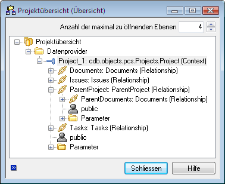
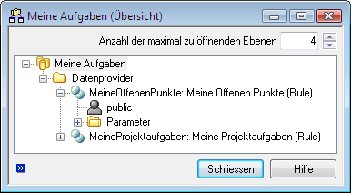
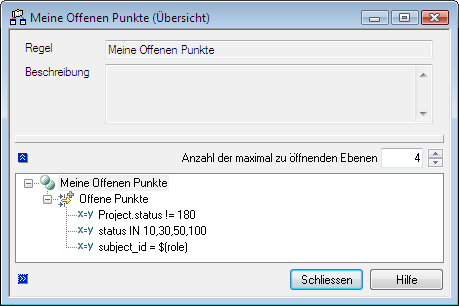
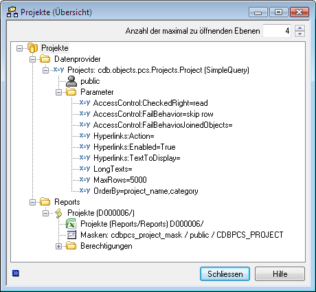
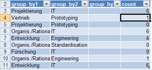
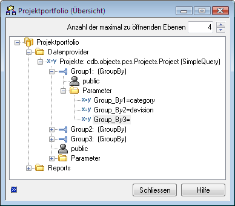
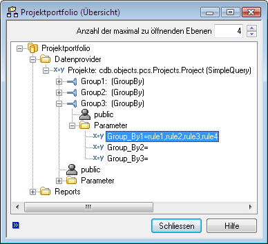
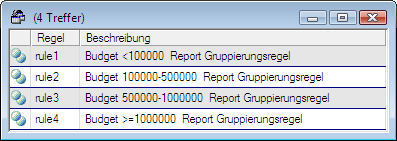
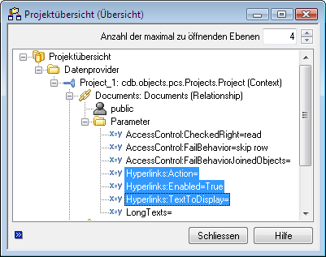
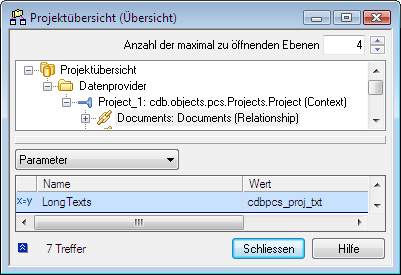

Datenquellen und Datenprovider¶
PowerReports beziehen ihre Daten aus XML Datenquellen, die im System unter konfiguriert werden.
XML Datenquellen können kontextfreie oder kontextbezoge Daten liefern und werden grundsätzlich anhand dieser Eigenschaft in zwei Typen unterschieden:
Kontextbezogene Datenquellen
Kontextbezogene Datenquellen liefern beispielsweise Daten zu einem Projekt, EC oder einem Artikel. Zur Auswertung kontextbezogener XML Datenquellen wird also immer mindestens ein Objekt benötigt, das den Kontext bildet. Beispielsweise Aufgaben und Offene Punkte zum Projekt. Das Projekt bildet in diesem Beispiel den Kontext. Reports, die auf kontextbezogenen Datenquellen basieren, werden immer über das Kontextmenü des kontextbildenden Objekts aufgerufen. Ein Report ‘Projektübersicht’, der Detailinformationen zu einem Projekt enthält, wird also im Kontextmenü eines Projektes aufgerufen.
Kontextfreie Datenquellen
Kontextfreie Daten sind beispielsweise Abfragen über den gesamten Datenbestand. Zur Auswertung kontextfreier Datenquellen wird kein kontextbildendes Objekt benötigt. Reports, die auf kontextfreien Datenquellen basieren, werden an zentraler Stelle in der OfficeLink-Menüleiste unter aufgerufen.
Excel: PowerReports - Datenquelleneigenschaften
Bezeichnung- Eindeutiger Name einer XML Datenquelle.
Kontext- Legt fest, ob die Datenquelle kontextfrei oder kontextbezogen ist. Für kontextfreie
Datenquellen bleibt dieses Feld leer. Für kontextbezogene Datenquellen wird der
Objekttyp, in dessen Kontext die Datenquelle ausgewertet werden soll, in Form eines
voll qualifizierten Pythonnamens der zugehörigen cdb.objects Klasse angegeben.
Beispielsweise
cdb.objects.pcs.Projects.Projectfür eine Datenquelle, die im Kontext von Projekten ausgewertet werden kann. Bei der Neuanlage einer Datenquelle stehen hier alle Root-Klassen in der Dropdown-Liste zur Verfügung. Bei der Verwendung von Python-Unterklassen muss der voll qualifizierte Pythonname jedoch manuell eingetragen werden. Kardinalität- Gibt die Kardinalität des Kontextes an. Für kontextfreie Datenquellen wird dieses Feld nicht ausgewertet. Für kontextbezogene Datenquellen legt die Kardinalität fest, ob die Datenquelle mit genau einem kontextbildenden Objekt (Single Select) oder mit einer beliebigen Anzahl kontextbildender Objekte (Multi Select) ausgewertet werden kann. Mögliche Werte sind 1 oder N.
Beschreibung- Beschreibung der Datenquelle.
Datenprovider¶
Die Daten einer XML Datenquelle werden durch zugeordnete Datenprovider geliefert. Eine Datenquelle kann aus einer beliebigen Anzahl von Datenprovidern bestehen. Datenprovider sind parametrisierbar und wiederverwendbar.
Datenprovider werden in zwei Gruppen unterschieden:
Universelle Datenprovider
Universelle Datenprovider sind vorgefertigte Datenproviderimplementierungen für häufige Anwendungsfälle, die ohne Programmierung in beliebigen Datenquellen verwendet und in deren Kontext konfiguriert werden können. Folgende Typen universeller Datenprovider stehen zur Verfügung:
Relationship
zur Navigation von Beziehungen des cdb.objects Frameworks
Rule
für konfigurierte komplexe Abfragen
SimpleQuery
für einfache interaktive Abfragen
GroupBy
zur Gruppierung der Ergebnismenge anderer Provider
Spezialisierte Datenprovider
Spezialisierte Datenprovider sind kundenspezifische Providerimplementierungen für spezielle Anwendungsfälle. Spezialisierte Datenprovider sind ebenfalls in beliebigen Datenquellen wiederverwendbar. Die Implementierung erfolgt durch Ableitung von einer vordefinierten Basisklasse und Implementierung einer Schnittstelle. Spezialisierte Datenprovider sind immer vom Typ
CustomCode.
Kontextbezogene Datenquellen enthalten automatisch einen speziellen Datenprovider, der das kontextbildende Objekt bzw. die kontextbildenden Objekte liefert. Dieser Datenprovider wird im Folgenden als Kontextprovider bezeichnet. Die folgende Abbildung zeigt den Kontextprovider anhand der XML Datenquelle ‘Projektübersicht’. Das Projekt, auf dem ein zugrundeliegender Report aufgerufen wird, ist somit automatisch in den exportierten XML Daten enthalten und kann im Report dargestellt werden.
Excel: PowerReports - Kontextprovider eines projektbezogenen Reports
Datenprovider können hierarchisch angeordnet werden. Ein untergeordneter Datenprovider arbeitet dabei immer mit der Ergebnismenge des übergeordneten Datenproviders. Die Ergebnismenge des übergeordneten Providers dient also als Eingabeparameter für den untergeordneten Provider. Auf diese Weise lassen sich beispielsweise die Ergebnisse des übergeordneten Providers mit einem GroupBy Provider gruppieren oder Beziehungen durch das Objektmodell navigieren.
Folgende Abbildung zeigt wieder das Beispiel ‘Projektübersicht’, erweitert um einen Relationship Provider, der die Dokumente zum Projekt liefert. Der Kontextprovider dient dabei als übergeordneter Provider und stellt damit das Startobjekt (das Projekt) zur Navigation der Beziehung.
Excel: PowerReports - Relationship Subprovider zum Kontextprovider
Datenprovider Eigenschaften¶
Excel: PowerReports - Datenprovider Eigenschaften
XML Datenquelle
Fremdschlüssel der zugehörigen XML Datenquelle. Automatisch vorbelegt und nicht änderbar.
Typ
Der Typ des Datenproviders (siehe Providertypen im Detail ).
Provider
Abhängig vom Providertyp spezifiziert dieses Feld die Datenherkunft (siehe Providertypen im Detail ).
XSD Name
Ein im Kontext der Datenquelle eindeutiger Namensraum. Abhängig vom Providertyp auch automatisch vorbelegt. Nach der Neuanlage eines Providers nicht mehr veränderbar.
Providertypen im Detail¶
Relationship
Datenprovider vom Typ Relationship liefern Objekte, die durch Navigation einer Beziehung des cdb.objects Frameworks ermittelt werden. Da zur Navigation einer Beziehung immer ein Startobjekt benötigt wird, können Relationship Provider ausschließlich als Subprovider verwendet werden. Relationship Provider können allen Providern zugeordnet werden, die cdb.objects Objekte als Ergebnis liefern.
Im Feld
Providerwird der Name einer Beziehung eingetragen, die ausgehend von dem Ergebnisobjekt des übergeordneten Providers navigierbar ist. Die jeweils verfügbaren Beziehungen stehen bei der Neuanlage eines Relationship Providers in einem Katalog zur Auswahl. Insofern es sich jedoch bei der Datenquelle des übergeordneten Providers nur um eine Python-Unterklasse handelt, dann werden die verfügbaren Beziehungen nicht automatisch aufgelistet, sondern müssen manuell eingetragen werden.Durch Verkettung von Relationship Provider können ausgehend von dem Startobjekt Daten aus dem gesamten Objektmodell ermittelt werden. Folgendes Beispiel zeigt die Verwendung von Relationship Provider ausgehend von einem Projekt. Unter anderem werden auch das übergeordnete Projekt und alle zu diesem Projekt gehörigen Dokumente ermittelt.
Excel: PowerReports - Beziehungen als Provider
Die Verwendung eines Relationship Providers an einem übergeordneten Provider, der ein n-stelliges Ergebnis liefert, führt zu einem Multi-Export, d.h. die Beziehung wird für jedes Ergebnisobjekt des übergeordneten Providers einzeln navigiert und gemeinsam mit dem Startobjekt exportiert. Für Datenquellen mit Multi-Export Konfigurationen ist ein spezielles Template-Sheet in der Excel Vorlage erforderlich (siehe Darstellung komplexer Zeilen bei Multi-Export Datenquellen ).
Die Ergebnismenge eines Relationship Providers ist in Abhängigkeit von der Kardinalität der Beziehung entweder ein
ReportDataObjekt oder eineReportDataList.Rule
Datenprovider vom Typ Rule liefern Objekte durch Auswertung einer konfigurierten Regel, die die Objekte deklarativ beschreibt. Mit konfigurierten Regeln lassen sich sowohl einfache als auch komplexe Abfragen unter Einbeziehung von Eigenschaften referenzierter Objekte ausführen. Detailierte Informationen zu konfigurierbaren Regeln finden Sie im Administratorhandbuch im Abschnitt ‘Konfigurierbare Regeln’.
Rule Provider können ohne übergeordneten Provider oder als Subprovider verwendet werden. In beiden Fällen kann die Regel durch Verwendung von Variablen parametrisiert werden. Die Variablen können durch einen vorgeschalteten Dialog vom Anwender abgefragt werden. Dazu im Folgenden ein Beispiel für einen regelbasierten Provider ohne übergeordneten Provider. Wenn eine Regel mit dem Namen My Projects: By Category Projekte mit einer über einen Reportdialog definierten Projektkategorie liefern soll und zu diesem Zweck der Term category=$(category) definiert wird, dann muss in dem Reportdialog ein Attribut mit dem Namen myprojectsbycategory-category eingebaut werden. Da der Variablenname $(category) in diesem Beispiel einem tatsächlichen Objektattributnamen entspricht, kann dieser variable Regelfilter zusätzlich in dem Report selbst per automatisch im XML-Schema erscheinendem Argumentattribut mit einer Zelle verlinkt und aktualisiert werden. Bei Verwendung als Subprovider wird versucht, die Variablen aus den Attributen des Ergebnisobjektes des übergeordneten Providers zu belegen, sofern diese nicht durch einen ggf. vorgeschalteten Dialog definiert sind. Ein Beispiel dazu für einen Term, der für einen regelbasierten Subprovider Aufgaben zu dem übergeordneten Projekt Provider liefern soll, wäre demnach cdb_project_id=$(cdb_project_id).
Im Feld ‘Provider’ wird bei Rule Providern der Name der zu verwendenden Regel eingetragen.
Die Sortierung der Ergebnismenge kann durch den Parameter OrderBy festgelegt werden. Die Definition der Sortierung erfolgt durch kommagetrennte Auflistung der Datenbankattribute, nach denen sortiert werden soll. Für eine absteigende Sortierung wird dem jeweiligen Attribut ein Minuszeichen vorangestellt.
Folgende Abbildung zeigt eine Datenquelle mit zwei Rule Providern zur Ermittlung von zu bearbeitenden Projektaufgaben und unerledigten Offenen Punkten, für die der angemeldete Anwender verantwortlich ist:
Excel: PowerReports - Provider zur regelbasierten Ermittlung von Aufgaben
Die Definition der Regel zur Ermittlung der Offenen Punkte könnte beispielsweise wie folgt aussehen:
Excel: PowerReports - Konfigurierte Regel zur Ermittlung der Offenen Punkte eines Anwenders
Die Ergebnismenge von Rule Providern ist immer eine ReportDataList .
SimpleQuery
Datenprovider vom Typ SimpleQuery liefern Objekte durch Abfragen auf einer Datenbanktabelle, ähnlich einer System-Suche. SimpleQuery Provider werden kontextfrei verwendet, dass heißt sie werden nicht als Subprovider verwendet, sondern immer Top Level zur Datenquelle.
Im Feld ‘Provider’ wird eine cdb.objects Klasse eingetragen, die den Typ der zu liefernden Objekte festlegt. Die cdb.object Klasse legt damit auch die Datenbanktabelle fest, auf der die Suche ausgeführt wird.
SimpleQuery Provider liefern ohne einschränkende Suchbedingungen den gesamten Datenbestand der jeweiligen Datenbanktabelle. Die zu verwendenden Suchbedingungen werden bei SimpleQuery Providern durch einen vorgeschalteten Reportdialog vom Anwender abgefragt. Dieser Dialog kann für jeden auf einer Datenquelle basierenden Report andere Suchbedingungen zur Auswahl stellen oder auch fest vorgeben. Unabhängig von den verwendeten Suchbedingungen kann die maximale Ergebnismenge mit dem Parameter MaxRows beschränkt werden. Wenn diese Menge überschritten wird, dann kommt es zu einer Fehlermeldung und der Report wird nicht generiert.
Die Sortierung der Ergebnismenge kann durch den Parameter OrderBy festgelegt werden. Die Definition der Sortierung erfolgt durch kommagetrennte Auflistung der Datenbankattribute, nach denen sortiert werden soll. Für eine absteigende Sortierung wird dem jeweiligen Attribut ein Minuszeichen vorangestellt.
Folgende Abbildung zeigt eine Datenquelle mit einem SimpleQuery Provider für Projekte mit einer definierten Sortierung und eine Begrenzung der Ergebnismenge auf 5000. Die übrigen dargestellten Parameter gelten auch für alle anderen Providertypen und werden in Provider Parameter ausführlich beschrieben.
Excel: PowerReports - SimpleQuery Provider
SimpleQuery Provider liefern immer eine ReportDataList als Ergebnis.
GroupBy
GroupBy Provider gruppieren das Ergebnis anderer Provider anhand konfigurierbarer Attribute oder Wertebereiche. Sie werden immer als Subprovider zu Providern verwendet, die als Ergebnis eine ReportDataList liefern. Hierbei können für alle numerischen Attribute des übergeordneten Providers Gruppenfunktionen (sum, average, min, max, count) definiert werden. Die Ergebnistabellen von GroupBy Providern sind damit besonders gut zur Erstellung von Diagrammen geeignet.
Excel: PowerReports - Ergebnistabelle eines GroupBy Providers
Die folgende Abbildung zeigt exemplarisch die Gruppierung von Projekten, die durch einen übergeordneten SimpleQuery Provider geliefert werden. Die Definition der Kriterien zur Gruppierung erfolgt durch die Parameter Group_By1, Group_By2 und Group_By3. Im einfachsten Fall werden diese Parameter mit Attributnamen belegt, nach denen gruppiert werden soll. Die Definition von Gruppenfunktionen erfolgt durch optionale Parameter Function1, Function2, usw. Diese werden jeweils mit einem durch Doppelpunkt getrennten Wertepaar aus Gruppenfunktion und Attributname belegt, z.B. mit count:* oder average:effort_plan (die Gruppenfunktion count steht hierbei standardmäßig zur Verfügung, d.h. diese muss nicht explizit als FunctionX des Providers definiert werden). Durch Hinzufügen mehrerer GroupBy Provider lassen sich die Ergebnisse des übergeordneten Datenproviders gleichzeitig nach unterschiedlichen Kriterien gruppieren. Jeder GroupBy Provider liefert dabei eine eigene Ergebnistabelle.
Excel: PowerReports - Gruppierung von Projekten
Die Gruppierungskriterien GroupBy_1, GroupBy_2 und Group_By_3 können in einem vorgeschalteten Reportdialog auch interaktiv vom Anwender abgefragt werden. Anwender können auf diese Weise nach beliebigen Eigenschaften selbst gruppieren. Die Gruppierungskriterien aus dem Dialog haben Vorrang gegenüber den im Register Parameter definierten Kriterien.
Zur Gruppierung nach Wertebereichen, beispielsweise Projekte nach Budget, kann statt eines Attributnamen auch eine Liste von konfigurierten Regeln angegeben werden. Die Regeln beschreiben dabei Teilmengen, in die die Ergebnisobjekte das übergeordneten Providers einsortiert werden. Die Regeln werden, wie in der folgenden Abbildung dargestellt, in Klammern als kommagetrennte Liste angegeben.
Excel: PowerReports - Gruppierung nach Wertebereichen mit Regeln
Die in dem Beispiel verwendeten Gruppierungsregeln geben Wertebereiche für das Projektbudget an. Die Definition dieser Regeln könnte beispielsweise wie folgt aussehen. Weitere Informationen zu konfigurierbaren Regeln finden Sie im Administratorhandbuch im Abschnitt ‘Konfigurierbare Regeln’.
Excel: PowerReports - Gruppierungsregeln am Beispiel Projekte nach Budget
CustomCode
Datenprovider vom Typ CustomCode können Daten auf beliebige Art und Weise ermitteln und zurückliefern. CustomCode Provider können beispielsweise Abfragen ausführen, berechnete Spalten hinzufügen oder auch Daten aus externen Datenbanken liefern. CustomCode Provider können die Reportdaten aus cdb.objects Objekten oder RecordSets konstruieren. Darüberhinaus können die Reportdaten auch völlig frei konstruiert werden. Die Implementierung von CustomCode Providern und eine ausführliche API Beschreibung finden Sie in Implementierung eigener Provider .
Context
Datenprovider vom Typ Context werden ausschließlich automatisch vom System bei der Neuanlage einer kontextbezogenen Datenquelle angelegt. Eine kontextbezogene Datenquelle enthält immer genau einen Datenprovider vom Typ Kontext. Dieser Provider liefert das Objekt bzw. die Objekte, auf denen der Report aufgerufen wurde. An den Kontextprovider können beispielsweise Subprovider vom Typ Relationship angehängt werden, um referenzierte Objekte in den Report einzubeziehen.
In Abhängigkeit von der Kardinalität der Datenquelle liefert ein Kontextprovider entweder einer Liste von Objekten als ReportDataList oder ein einzelnes Objekt als ReportData Objekt.
Provider Parameter¶
Datenprovider sind durch Parameter konfigurierbar. Die verfügbaren Parameter hängen vom jeweiligen Providertyp ab und werden bei der Neuanlage von Providern automatisch mit Standardwerten hinzugefügt. Die in diesem Abschnitt beschriebenen Parameter gelten für alle Provider, die Daten in Form von cdb.objects Objekten liefern. Dies gilt auch für selbst implementierte Provider vom Typ CustomCode.
Excel: PowerReports - Datenprovider Standardparameter
- Rechteprüfung auf Objektebene
Die Rechteprüfung auf Objektebene kann für alle Datenprovider, die cdb.objects-Objekte als Ergebnismenge liefern, mit folgenden Parametern konfiguriert werden.
AccessControl:CheckedRight
Legt das pro Objekt zu prüfende Recht fest. Ist dieser Parameter nicht vorhanden oder leer, ist die Rechteprüfung auf Objektebene deaktiviert. Verwendet werden können alle im Rechtesystem verfügbaren Rechte und Rechtegruppen. Standardmäßig wird bei Neuanlage eines universellen Providers automatisch das read-Recht eingetragen. Bei großen Datenmengen, wie sie beispielsweise bei Providern vom Typ SimpleQuery anfallen können, verschlechtert sich bei aktivierter Rechteprüfung das Laufzeitverhalten. Sofern nicht unbedingt erforderlich, sollte die Rechteprüfung auf Objektebene bei potentiell großen Datenmengen deaktiviert werden.
AccessControl:FailBehavior
Legt das Verhalten bei negativer Rechteprüfung fest. Zur Auswahl stehen zwei Modi:
obfuscate
Die Objektattribute werden vor dem Export unkenntlich gemacht. Die Schlüsselattribute und weitere hinzugefügte Daten, beispielsweise berechnete Spalten, bleiben leserlich.
skip row
Das Objekt und ggf. weitere hinzugefügte Daten werden nicht exportiert.
- Hyperlinks
Datenprovider können konfigurativ Hyperlinks exportieren, mit denen aus Excel direkt auf die entsprechenden Objekte im System verlinkt werden kann. Die Konfiguration von Hyperlinks erfolgt mit den nachfolgend beschriebenen Parametern:
Hyperlinks:Enabled
Aktiviert Hyperlinks für den Datenprovider. Es wird ein zusätzliches Attribut cdbxml_hyperlink exportiert. Dieses kann in der Excel Datenbindung verwendet werden und verlinkt damit automatisch aus Excel auf das entsprechende System-Objekt. Zur Aktivierung von Hyperlinks ist es hinreichend, diesen Parameter mit ‘true’ zu belegen. Werden die nachfolgend beschriebenen weiteren Parameter nicht belegt, werden Hyperlinks mit der Aktion CDB_ShowObject (Anzeige des Objekts im Infodialog) generiert, die mit der im Klassenverzeichnis konfigurierten Objektbeschreibung beschriftet werden.
Hyperlinks:Action
Legt die auszuführende System-Operation beim Click auf den Hyperlink fest. Verwendet werden können alle für eine Objektklasse definierten Operationen. Dies umfasst Systemoperationen wie beispielsweise CDB_Modify und CDB_View, PowerScript Operationen und GraphView Operationen wie beispielsweise cdbpcs_project_overview zur Darstellung der Projektübersicht. Wird dieses Feld leer gelassen, wird die Klassenvariable __default_action__ der zugrundeliegenden cdb.objects Klasse ausgewertet. Ist diese ebenfalls nicht definiert, wird die Operation CDB_ShowObject verwendet.
Hyperlinks:TextToDisplay
Legt den anzuzeigenden Text fest. Es kann eine beliebige Zeichenkette für einen konstanten Ausdruck oder ein Attributname der zugrundeliegenden cdb.objects-Klasse angegeben werden. Wird dieses Feld leer gelassen, wird die konfigurierte Objektbeschreibung aus dem System-Klassenverzeichnis verwendet.
Excel: PowerReports - Hyperlinkkonfiguration und zugehöriges Schemaobjekt
- Langtexte
Datenprovider können optional die zu einem Objekt gehörigen Langtexte exportieren. Die Angabe der zu exportierenden Langtexte erfolgt aus Performancegründen explizit durch den Parameter LongTexts . Die zu exportierenden Langtexte werden durch eine kommagetrennte Aufzählung der Langtextrelationen angegeben. Die eingetragenen Langtexte stehen anschließend in Excel zur Herstellung der Datenbindung unter diesen Namen zur Verfügung.
Excel: PowerReports - Langtextkonfiguration und zugehöriges Schemaobjekt
- Attributtypen
Datenprovider exportieren standardmäßig neben allen normalen Attributen auch immer alle Mapped Attribute. Jedoch muss das Ausleiten weiterer spezieller Attribute, wie das der Joined und Virtual Attribute, für jeden Provider explizit aktiviert werden. Die geschieht, indem man den Providerparameter AllAttributeTypes auf True setzt.
Wichtig
Das Verwenden von Joined und Virtual Attributen ist aus Gründen der Performance nicht für Provider empfehlenswert, welche viele Objekte liefern müssen.
- MaxRowsTruncate
- Die Ergebnismenge eines Providers kann mit diesem Parameter limitiert werden. Der Standardwert hierfür liegt aufgrund einer Beschränkung in Excel bei 64000. Falls eine Liste beim Füllen einer Tabelle die Tabellenzeilennummer 65535 überschreitet, kommt es zu einer XML-Import Fehlermeldung in Excel, dass keine oder nur einige Daten importiert wurden.
Generelle Zugriffsberechtigungen auf Providerebene¶
Der Zugriff auf die Daten eines Datenproviders wird durch Zuordnung von berechtigten Rollen und Personen geschützt. Bei der Neuanlage eines Datenproviders wird automatisch die Rolle ‘public’ eingetragen, so dass auf Providerebene zunächst keine Zugriffsbeschränkungen bestehen.
Excel: PowerReports - Generelle Zugriffsberechtigungen auf Providerebene
Zusätzlich zu den Zugriffsbeschränkungen auf Providerebene führen Provider beim Datenexport auch eine Rechteprüfung auf Objektebene anhand des Rechtesystems durch. Die Rechteprüfung auf Objektebene ist für jeden Provider aktivierbar/deaktivierbar. Das geprüfte Recht ist konfigurierbar.